КОМПЛЕКСНАЯ ЗАЩИТА
В отличие от впрыска перед укупоркой, система защищает продукт на всём пути движения.
Себестоимость — 0,01 ₽/Л
В отличие от впрыска перед укупоркой, система защищает продукт на всём пути движения.
Интеграция в узлы хранения, перекачки и розлива.
Без реконструкции существующей линии.
Без криогенной инфраструктуры и сложных дозирующих узлов. Снижение капитальных и операционных затрат.
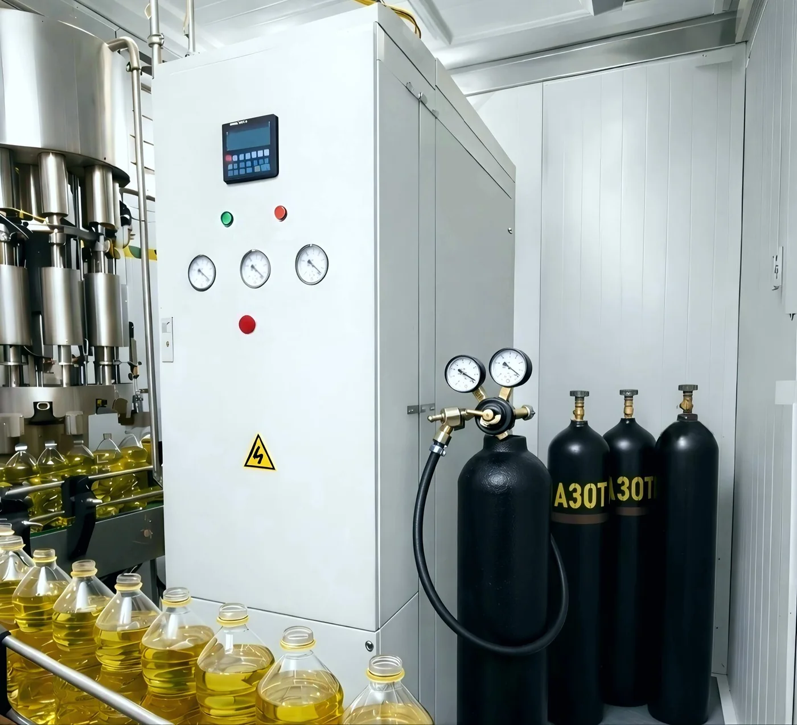
Используются стандартные азотные баллоны 5–50 л вместо криогенных резервуаров и испарителей. Без хранения жидкого азота, без экстремально низких температур, без повышенных требований к промышленной безопасности. Заправка и замена доступны
в любом регионе — от 500 ₽ за баллон.
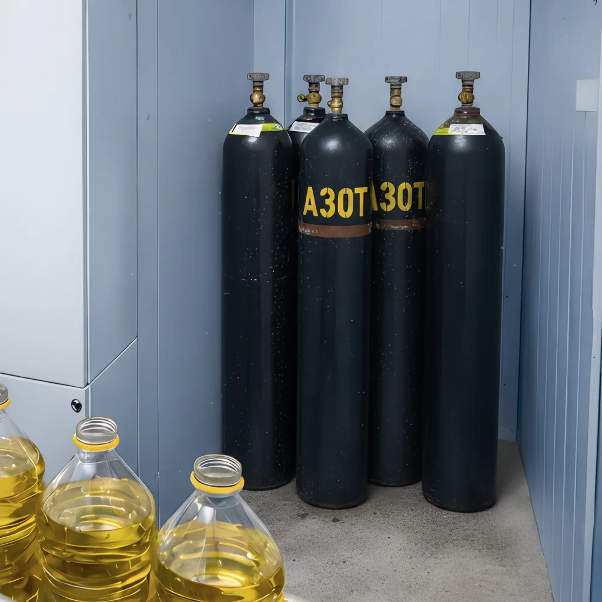
Анализируем технологическую схему, рассчитываем точки дозирования
и экономику проекта. Готовим КП.
Выезд специалиста на производство.
Определение места установки, подключение к линиям и электросети.
Установка и интеграция в действующую линию. Запуск и настройка занимают до 3 часов без реконструкции производства.
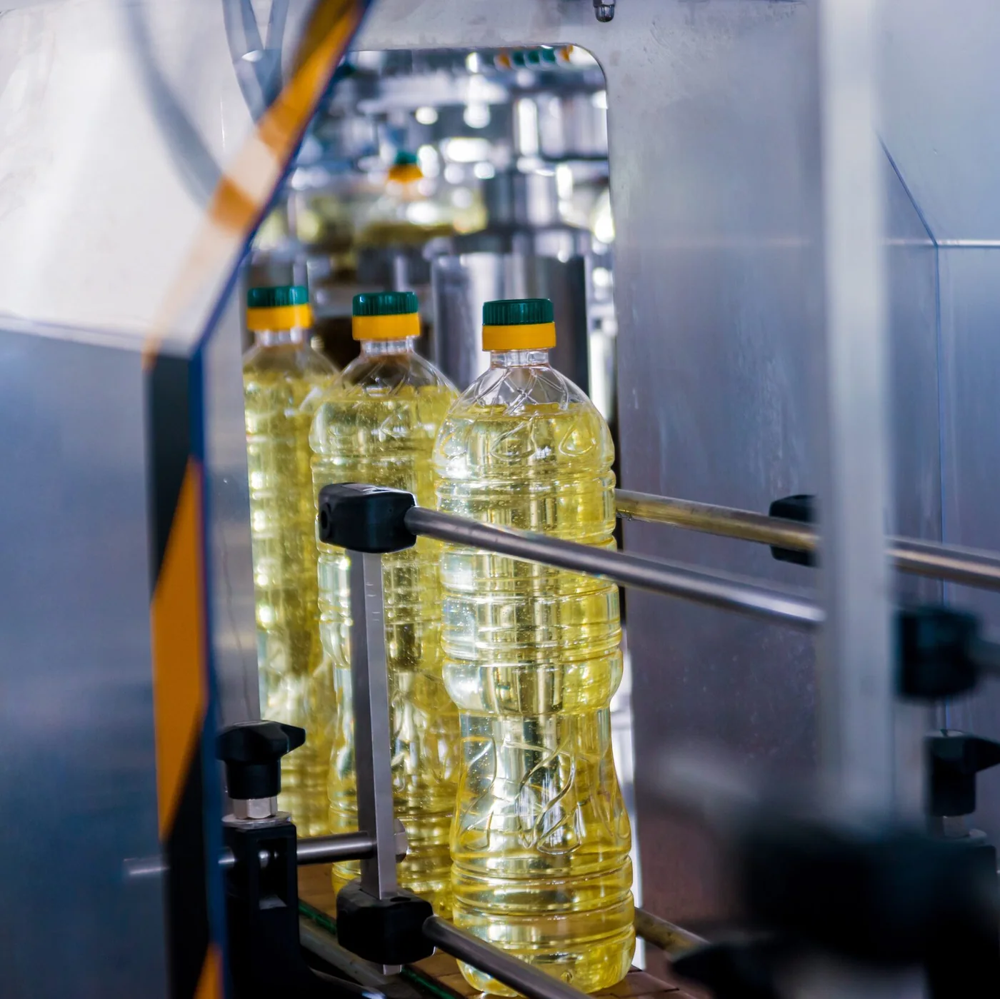
Азот дозируется непосредственно в поток масла, формируя мелкодисперсную газовую фазу и интенсивный массообмен. Удаление растворённого кислорода происходит до розлива, а инертная среда поддерживается на всех этапах от хранения и перекачки
до фасовки.
Замедляет окисление, сохраняя свежий вкус
и аромат.
Исключает перепады давления и деформацию PET-тары.
Снижает содержание растворённого O₂
до розлива.
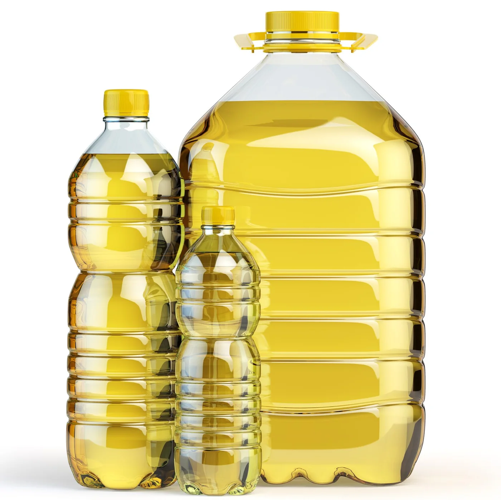
Продлевает фактический срок стабильности партии.
Ограничивает повторное насыщение O₂ в насосах и линиях.
Сохраняет инертную среду при перевозке
и перепадах °C
Линии розлива ПЭТ;
Фасовка в канистры и еврокубы;
Длительное хранение в резервуарах;
Производство с высокой скоростью розлива;
Масловозы, флекситанки и танк-контейнеры;
Экспортные партии с длительной логистикой;
Рафинированные и нерафинированные масла
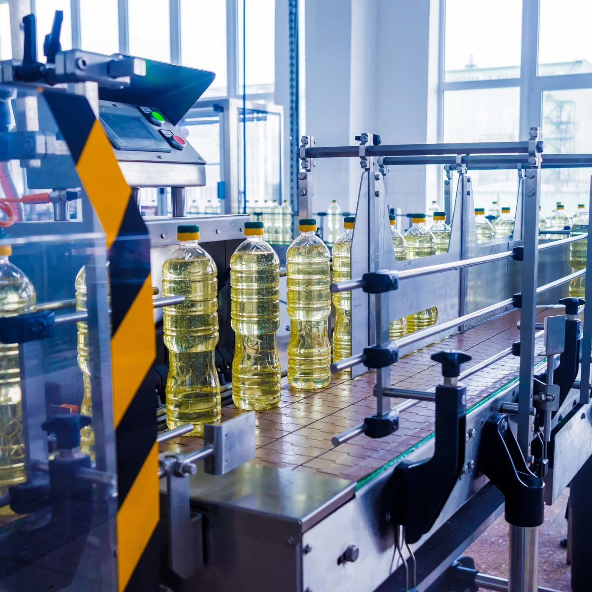
Подбор и адаптация оборудования под конкретные производственные задачи.
Встраиваем маркировку в действующие линии розлива: оборудование, ПО, агрегация и обмен данными.
Профессиональная интеграция решений в действующие линии розлива.
Настройка оборудования под реальные параметры производства.
Оперативная поддержка при сбоях печати, верификации, отбраковки, агрегации и обмена данными.
Работаем с оборудованием и решениями в долгосрочной перспективе.
Повышение производительности существующих линий.
Выявление узких мест и оперативное устранение неисправностей.
Разработка схем под конкретные производственные условия.
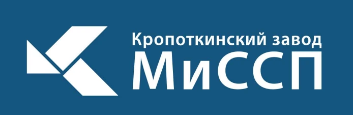
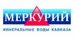
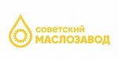
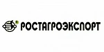
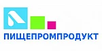
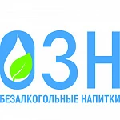
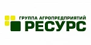
Начальник производства, «МаслоСиб», Омск
После запуска новой линии ПЭТ 1 л (60 т/сутки) столкнулись с деформацией бутылок уже на складе и претензиями от сети. Нашли предложение ЮВИН, единственных производителей в РФ, установили их азотный обогатитель, пуско-наладка прошла без остановки смены. Подключили стандартные баллоны N₂, оптимизировали точки инжекции и синхронизацию укупорки.
Результат: деформация исчезла полностью, брак по внешнему виду — 0, возвратов нет уже 2 месяца. Производительность линии выросла примерно на 15% за счёт устранения мелких сбоев и корректной настройки. Расход азота — минимальный: одного баллона хватает очень надолго, что почти не повлияло на себестоимость. Отдельно отмечу аккуратную работу и подробный инструктаж персонала. Рекомендуем ЮВИН как партнёра, который действительно доводит линию «под ключ» и отвечает за результат.
Главный технолог ООО «ЭкоМасло», Нижний Новгород
Мы выпускаем линейку нерафинированных масел, и спустя пару месяцев хранения в продукте начинал появляться лёгкий "старый" запах — типичный для окисления. При этом менять рецептуру или добавлять антиоксиданты было нельзя, ведь продукт позиционируется как полностью натуральный.
После установки азотного инжектора ЮВИН на линии розлива проблема исчезла. Газ вытесняет кислород из бутылки и создаёт инертную среду, поэтому масло сохраняет свежий аромат и цвет до конца срока хранения. Особенно приятно, что решение не потребовало перехода на жидкий азот, обслуживание минимальное.
Проверяли партии через 6 месяцев — ни намёка на затхлый запах, покупатели отмечают более «свежий» вкус. Технология Ювин реально помогает сохранить качество без химии и лишних затрат.
Технолог ООО «Здоровое питание», Краснодар
Перед нами стояла задача увеличить срок годности фасованного масла хотя бы на полгода, но без добавления консервантов и без перехода на жидкий азот — слишком сложная и дорогая система для нашего объёма.
Инженеры компании ЮВИН предложили компактную установку азотирования, которая работает на газообразном азоте. После запуска масло перестало темнеть и менять вкус даже через 8 месяцев хранения. Тесты в лаборатории подтвердили: уровень перекисного числа снизился почти вдвое, что означает реальное продление срока годности.
Отдельно благодарим за чёткую настройку и обучение операторов — всё работает стабильно.
Коммерческий директор, Акиф, Барнаул
На производстве возникала периодически проблема - после перемещения бутылок на склад деформировалась тара. Попробовали установить инжекторное устройство для азотирования, но оно не оправдало наших ожиданий: расход азота был высоким (2-3 баллона на 20 тонн масла), а качество продукции не удовлетворяло требованиям. В результате поисков остановились на азотном обогатителе, разработанном ООО ГК Ювин, выбирали выбирали долго, потому что уже обожглись.
Проблемы с деформацией бутылок исчезли, а расход азота снизился до минимума (1 баллона хватает на 100 тонн масла). Благодарим компанию за качественное оборудование и отличный сервис, приятно порадовал профессионализм команды Ювин, отдельно хотелось бы отметить работу и экспертность Юрия, который дополнительно устранил сбои в работе нашей линии и помог увеличить ее производительность на 15%! Рекомендуем компанию ГК Ювин как надежного партнера, способного преодолеть самые сложные технические вызовы.
Инженер, Виталь, Краснодар
Благодаря использованию азотного обогатителя от ГК Ювин, мы смогли решить проблему деформации бутылок на нашей линии розлива. Эффективность оборудования поражает: не только качество продукции улучшилось, но и расход азота сократился до впечатляющих значений. Кроме того мы постоянно сталкивались с проблемой простоев на линиях розлива.
Специалисты Ювин провели комплексную пуско-наладку, включая длительно простаивающее оборудование. Теперь линии работают бесперебойно, что оказало положительное воздействие на наше производство. Команда Ювин проявила высокий профессионализм, а особенно хотим выделить Василия за оперативное устранение сбоев и оптимизацию производственной линии. Сотрудничество с ГК Ювин – это не только отличное оборудование, но и превосходный сервис. Рекомендуем с уверенностью!
Начальник производства, ЭкоМасло, Тюмень
Наша компания столкнулась с вызовом в повышении производительности линий розлива. Обратившись в Ювин, мы получили не только квалифицированный подбор оборудования, учитывающий наши уникальные требования, но и профессиональную поддержку на каждом этапе. Результат – эффективность производства увеличилась на 20%.
Установка азотного обогатителя решила проблему деформации бутылок и сделала наше производство более эффективным и экономичным. Отдельное спасибо Юрию за отличную работу по настройке и ремонту линии розлива. ГК Ювин – это не просто поставщик оборудования, это настоящий технический партнер, готовый преодолевать любые вызовы производства.
Наш менеджер свяжется с вами